PL-300: Microsoft Power BI Data Analyst
Mock exams and study material built from a 382-question reference bank. Passing score: 700 out of 1000.
| Prepare the data | 25–30% |
| Model the data | 25–30% |
| Visualize and analyze the data | 25–30% |
| Manage and secure Power BI | 15–20% |
The real exam has roughly 40–60 questions in 100 minutes, mixing single/multiple choice, hotspots, drag-and-drop, and case studies.
Mock Exam
Questions are drawn at random from all 382 questions — choice, hotspot, and drag-and-drop are all auto-graded.
Question Bank
All 382 questions, every format — answer directly and get instant grading.
PL-300 Study Guide
A from-zero Power BI study guide — written for first-time users, building from core concepts up to exam-critical details, illustrated with real exhibits from the question bank.
Getting started: what is Power BI?
Power BI is Microsoft's business intelligence (BI) tool: it turns raw data scattered across Excel files, databases, and cloud services into interactive reports so you and your team can answer questions with data. It has three parts:
| Component | What it is | What you do with it |
|---|---|---|
| Power BI Desktop | Free Windows authoring tool | Connect data, clean and transform, build the model and report (where the exam lives) |
| Power BI Service | Cloud site app.powerbi.com | Publish reports, schedule refresh, share with colleagues, build dashboards |
| Power BI Mobile | Phone/tablet app | View reports and receive alerts anywhere |
The overall workflow
Building a report follows this journey — and the four exam domains slice along it:
Five terms you must know
| Term | Plain-language meaning |
|---|---|
| Semantic model (formerly dataset) | The cleaned data + table relationships + measures — the "data engine" behind reports. One model can feed many reports |
| Report | One or more pages of interactive visuals, authored in Desktop |
| Dashboard | Service-only; a one-page overview assembled by pinning visuals from reports |
| Workspace | A collaboration folder in the cloud holding models, reports, dashboards, with role-based access |
| App | A packaged, read-only bundle of workspace content for broad distribution |
File formats
.pbix— the standard Desktop file: data, model, and report..pbit— template: same structure but no data; can prompt for parameters. Great for sharing reusable starting points..pbip— project format that splits content into text files, suited to Git version control.
How the exam works: format, scoring, strategy
PL-300 validates your ability to prepare, model, visualize, and analyze data with Power BI, and to deploy and maintain those assets.
| Item | Details |
|---|---|
| Questions / time | About 40–60 questions, 100 minutes (including case studies) |
| Passing score | 700 / 1000 |
| Question formats | Single choice, multiple choice, hotspot (dropdowns), drag-and-drop, yes/no series, case studies |
| Languages | English, Traditional Chinese, and more |
1. Prepare the data (25–30%)
This domain is about connecting data and cleaning it. The tool is the Power Query Editor (the "Transform data" button in Desktop). Every transformation you make is recorded as an "Applied Step" and replayed automatically on refresh — that is what makes it more powerful than hand-editing Excel.
Connecting data & storage modes
"Get Data" connects to hundreds of sources: Excel, CSV, SQL Server, SharePoint, web pages… The key concept when connecting is the storage mode — copy the data in, or query it where it lives:
- Import: data is copied and compressed into the model; fastest queries, full features; needs scheduled refresh. The default, and the usual "best performance" exam answer.
- DirectQuery: data stays at the source and every interaction queries it live; for near-real-time or huge data, but slower visuals and limited features.
- Dual: behaves as Import or DirectQuery depending on the query; typical for dimension tables in composite models.
- Live Connection: connect to an existing semantic model and reuse its measures — the "least development effort" choice.
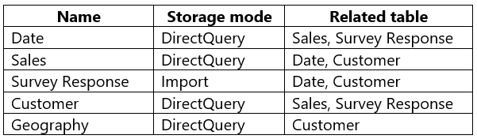
| Refresh requirement | Recommended storage mode |
|---|---|
| Near real time | DirectQuery |
| Daily/weekly refresh, fastest visuals | Import (or Import aggregations) |
| Dimensions joined to a DirectQuery fact | Dual |
The transforms that get tested
Beginners most often confuse Merge vs Append and Pivot vs Unpivot — remember them by scenario:
- Merge = horizontal JOIN: add columns from another table via a shared key. Orders + Customers → each order row gains the customer's city.
- Append = vertical stack: add rows from identically-shaped tables. January sales + February sales → one table. Disable load on the originals afterward to keep the model small.
- Unpivot: when column headers are themselves data (2022, 2023, 2024 year columns), turn them into attribute/value rows (wide → long). Pivot is the reverse. Headers that are years/months ⇒ the answer is almost always Unpivot.
- Group By: aggregations (orders per customer, sales per month).
- Transpose: swap the whole grid's rows and columns — different from Pivot/Unpivot.
- Use first row as headers, Fill Down/Up (fix nulls from merged cells), Split Column, Column From Examples (type a few samples and it infers the transform).
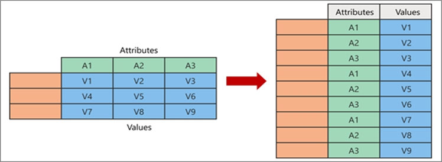
Data profiling: check the data's health first
The View tab enables three profiling tools; the exam asks what each one shows:
- Column quality: Valid / Error / Empty percentages per column — spot bad columns at a glance.
- Column distribution: Distinct vs Unique counts — tells you whether a column can be a key (every row unique).
- Column profile: single-column statistics (min, max, average) and a value histogram.
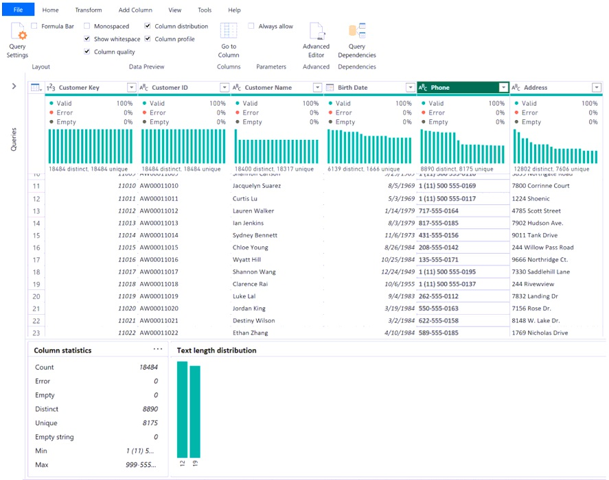
Handling errors
Two error messages appear constantly in questions — you are given the message and asked the cause:
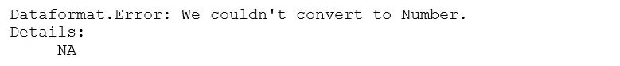
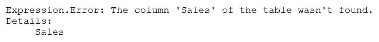
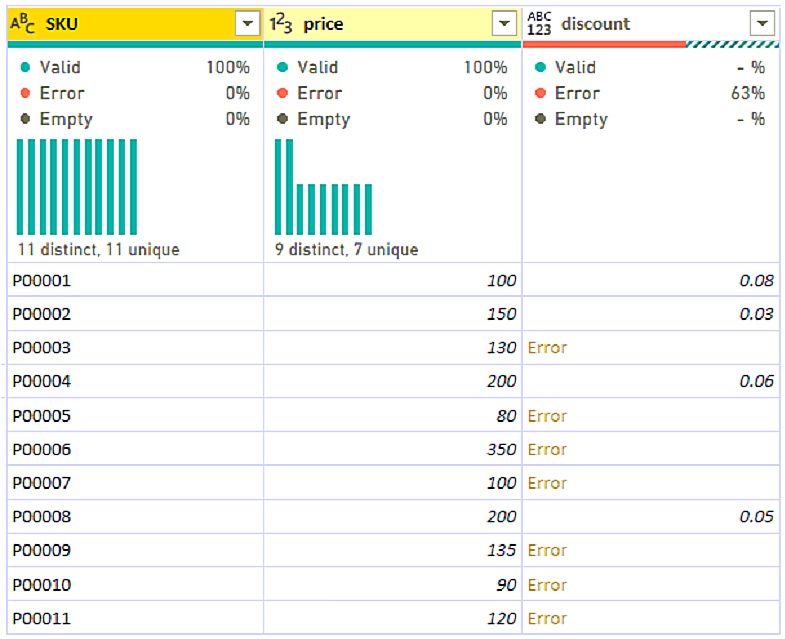
Dataformat.Error: We couldn't convert to Number— the column mixes text (like "NA") that cannot become a number. Fix: Replace Errors with a default, or Replace Values before changing the type.Expression.Error: The column 'X' wasn't found— the source column was renamed or removed, so an applied step can't find it.- Know the difference: Replace Errors (substitute a value, keep all rows) vs Remove Errors (delete the rows) vs Keep Errors (keep only failing rows, for inspection).
Query folding & performance
- When steps can be translated back into the source's native SQL, they "fold" — the database does the heavy lifting. Right-click a step → View Native Query: enabled means folding works; grayed out means Power BI takes over from that step on.
- Incremental refresh (refresh only the newest partitions) requires a folding-capable source.
- Shrink the model: drop unused columns/rows, disable auto date/time, avoid high-cardinality columns (GUIDs, timestamps with seconds), pre-aggregate.
2. Model the data (25–30%)
With clean data, the next step is wiring tables together into a model and defining calculations with DAX. This is where Power BI differs most from Excel — and the heaviest exam domain.
The star schema
The golden rule of modeling: one fact table in the middle (events that happened: each order, each sale — many rows), surrounded by dimension tables (who/what/when/where: customers, products, dates — few rows), joined one-to-many into the fact. Drawn out, it looks like a star:
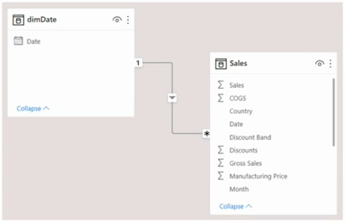
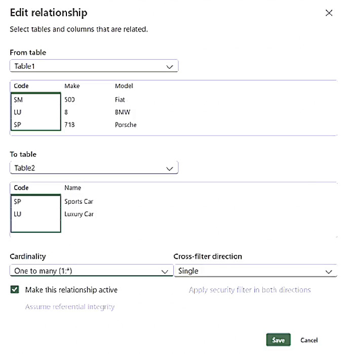
Three relationship settings
- Cardinality: one-to-many (1:*) is the norm; avoid many-to-many — resolve with a bridge table.
- Cross-filter direction: defaults to single (dimension → fact). Bidirectional adds ambiguity and cost; to let RLS flow across it, tick "Apply security filter in both directions."
- Active/inactive: only one active (solid) relationship between two tables. When order date and ship date both join the Date table, the second is dashed — activate it per-measure with
USERELATIONSHIP().
Date = CALENDAR(DATE(2020,1,1), DATE(2026,12,31)).DAX first lesson: calculated columns vs measures
| Calculated column | Measure | |
|---|---|---|
| When it computes | At refresh, row by row, stored in the model | At query time, against the viewer's current filters |
| Context | Row context: one row at a time | Filter context: the filtered set of rows |
| Memory | Consumes it | Formula only |
| Use for | Fields for slicers/axes/grouping | Aggregations and KPIs — the answer when the exam says "minimize model size" |
Analogy: a calculated column is like dragging a formula down a new Excel column; a measure is like a PivotTable value that recalculates whenever you re-slice.
Core DAX, learned on one tiny dataset
Every example below uses these two small tables (Products is a dimension, Sales a fact, related one-to-many on PID):
| ID | Name | Category |
|---|---|---|
| P1 | Laptop | Computers |
| P2 | Mouse | Accessories |
| P3 | Keyboard | Accessories |
| Order | PID | Qty | Price |
|---|---|---|---|
| S1 | P1 | 1 | 30000 |
| S2 | P2 | 2 | 500 |
| S3 | P2 | 1 | 500 |
| S4 | P3 | 3 | 900 |
| S5 | P1 | 1 | 28000 |
Iterators (SUMX): compute per row, then total
SUM can only add up an existing column; when the amount must be computed as quantity × price, use SUMX to iterate:
Revenue = SUMX ( Sales, Sales[Qty] * Sales[Price] )Row by row: 1×30000 + 2×500 + 1×500 + 3×900 + 1×28000 = 62,200. Every X-function (SUMX/AVERAGEX/COUNTX/MAXX) follows this compute-per-row-then-aggregate pattern.
CALCULATE: rewrite the filters, then evaluate
First understand filter context: a measure's result always depends on which rows survive the current filters. Click "Accessories" in a slicer and Revenue only adds S2, S3, S4 = 3,700. CALCULATE exists to override those filters with conditions you specify:
Accessory Revenue = CALCULATE ( [Revenue], Products[Category] = "Accessories" )
Grand Total = CALCULATE ( [Revenue], ALL ( Products ) ) -- drop all Products filters
Share = DIVIDE ( [Revenue], CALCULATE ( [Revenue], ALL ( Products ) ) )"Share" is the classic combo: the numerator moves with the user's filters while ALL pins the denominator to the grand total — on the Accessories row you get 3700 / 62200 = 5.9%. Want the denominator to be the user's current selection instead? Use ALLSELECTED().
Reading across tables: RELATED, RELATEDTABLE, LOOKUPVALUE
Mnemonic: which table you are standing on decides the function.
1. RELATED — standing on the many side (Sales), fetch one value from the one side. Add a calculated column ProductName = RELATED ( Products[Name] ) to Sales; each row walks the relationship and brings back its product name:
| Order | PID | Qty | ProductName (new) |
|---|---|---|---|
| S1 | P1 | 1 | Laptop |
| S2 | P2 | 2 | Mouse |
| S4 | P3 | 3 | Keyboard |
2. RELATEDTABLE — standing on the one side (Products), grab all related rows from the many side. It returns a table, so wrap it in COUNTROWS or SUMX. Add SalesCount = COUNTROWS ( RELATEDTABLE ( Sales ) ) to Products:
| ID | Name | SalesCount (new) |
|---|---|---|
| P1 | Laptop | 2 |
| P2 | Mouse | 2 |
| P3 | Keyboard | 1 |
3. LOOKUPVALUE — when no relationship exists at all. Works like Excel's VLOOKUP: ProductName = LOOKUPVALUE ( Products[Name], Products[ID], Sales[PID] ) means "find the Products row whose ID equals my PID, return its Name." Prefer RELATED when a relationship exists (faster); keep LOOKUPVALUE for unrelated tables.
| You stand on | You want | Use |
|---|---|---|
| Many side (fact) | A single value from the one side | RELATED |
| One side (dimension) | All related many-side rows (then aggregate) | RELATEDTABLE + COUNTROWS/SUMX |
| Any table | A value from an unrelated table | LOOKUPVALUE |
Other must-know topics
- Time intelligence:
TOTALYTD,SAMEPERIODLASTYEAR,DATESINPERIOD(rolling N months),DATEADD. Prerequisite: a contiguous, marked date table. - Counting family:
COUNT/COUNTA/COUNTROWS/DISTINCTCOUNT— on the Sales table above,DISTINCTCOUNT(Sales[PID])= 3. VAR … RETURN: store repeated expressions in a variable — computed once, easier to read.
Sales YTD = TOTALYTD ( [Revenue], 'Date'[Date] )
Sales LY = CALCULATE ( [Revenue], SAMEPERIODLASTYEAR ( 'Date'[Date] ) )
Rolling12 = CALCULATE ( [Revenue],
DATESINPERIOD ( 'Date'[Date], MAX ( 'Date'[Date] ), -12, MONTH ) )Row-level security (RLS)
Different people open the same report but see only their own data. Three steps:
- Desktop: Modeling → Manage roles; write a table-filter DAX like
[Region] = "West", or dynamic[Email] = USERPRINCIPALNAME()for per-user data. - Desktop: test with "View as".
- After publishing, open the semantic model's Security page in the service and assign users/groups to roles.
Performance tuning
- Performance Analyzer (View tab): records per-visual render and DAX timings; export to JSON.
- Reduce cardinality (strip seconds, split date and time), integer keys, prefer measures over calculated columns, aggregation tables for huge facts.
3. Visualize and analyze the data (25–30%)
With the model ready you build report pages. The exam cares less about beauty and more about "which need maps to which visual" and the correct names of interaction features.
Choosing the right visual
| Need | Visual |
|---|---|
| One headline number (total, KPI) | Card / KPI |
| Progress toward a target | Gauge, KPI |
| Trend over time | Line chart; forecasting → the Analytics pane's Forecast |
| Category comparison | Bar / column chart |
| Two measures + distribution | Scatter chart, optionally with a play axis |
| Part-to-whole (with drill-down) | Treemap, donut; Decomposition tree |
| Cumulative gains/losses | Waterfall chart |
| "What drives this metric?" | Key influencers |
| Auto text summary | Smart narrative |
| Natural-language Q&A | Q&A (numeric answers render as a card) |
| Geographic data | Map / filled map; shape map |
| Detail + subtotals + hierarchy | Matrix — a plain Table has no hierarchy |
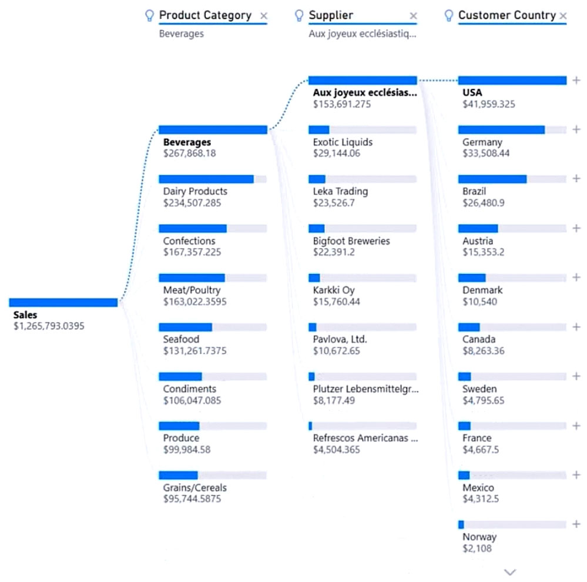
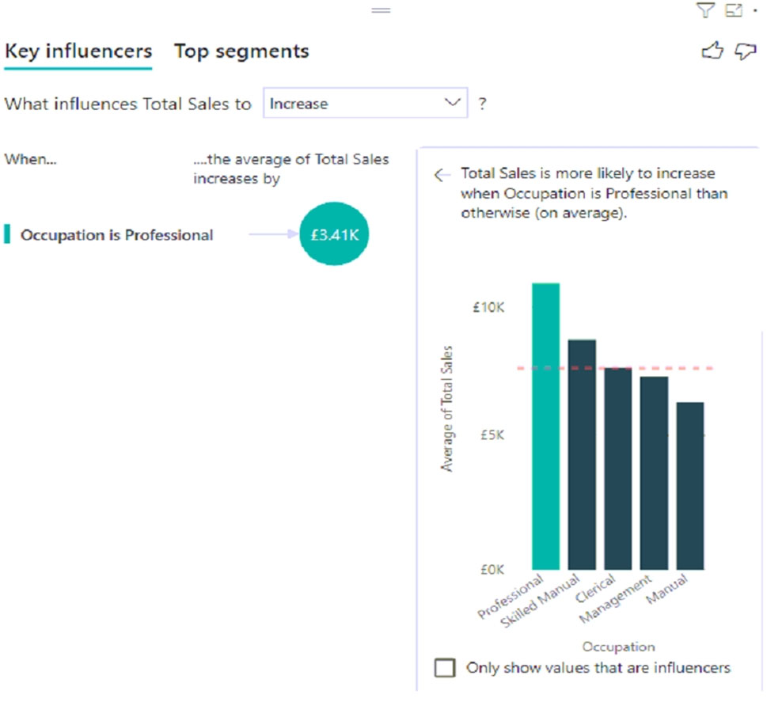
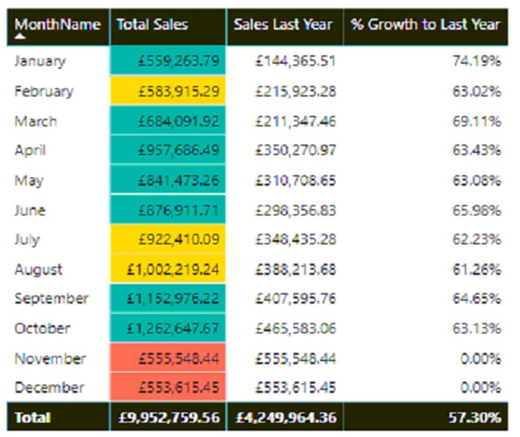
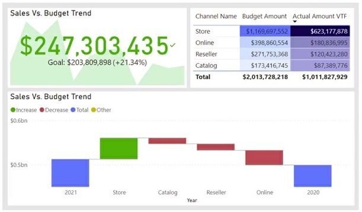
Interactions, filters & navigation
- Filter scopes: visual → page → all pages. A slicer is an on-canvas filter for users; Sync slicers extends one across pages.
- Edit interactions: when visual A is clicked, does B filter, highlight, or ignore?
- Drill through: right-click a data point on a summary page → jump to a detail page carrying that filter.
- Bookmarks + buttons + Selection pane: saved page states for navigation menus, reset-filters buttons, show/hide toggles.
- Conditional formatting: color by measure, data bars, icons; "Field value" uses a color-code column directly.
- Top N filter, groups/bins, mobile portrait layout.
- Analytics pane: average/median/percentile lines, trend lines; line-chart Forecast and Anomaly detection.
Dashboards vs reports (classic exam contrast)
- Dashboards exist only in the service, assembled by pinning visuals — including from several different reports.
- Data alerts only work on dashboard cards, KPIs, and gauges; to notify other people, chain a Power Automate flow.
- Subscriptions email snapshots on a schedule; comments support @mentions, including external users.
4. Manage and secure Power BI (15–20%)
Once a report goes to the cloud, this domain revolves around four questions: who can do what? how does data stay fresh? how is it shared? how do we stop leaks? Think of the service as your company's shared cloud drive and everything falls into place.
Workspaces and the four roles
A workspace is a shared folder in the cloud holding semantic models, reports, and dashboards. Each member gets one role, from most to least powerful:
| Role | Analogy | Key rights |
|---|---|---|
| Admin | Folder owner | Everything, incl. deleting the workspace, managing all members, updating/deleting the app |
| Member | Senior collaborator | Publish/update the app, add lower-privileged members, share content |
| Contributor | Editor | Create/edit/delete content, schedule refresh; cannot share or publish the app |
| Viewer | Guest | View and interact only; the only role RLS applies to |
Scenario lookup table (90% of this domain's questions look like this)
| Scenario in the question | Correct move | Why |
|---|---|---|
| Someone must invite others, with least privilege | Member | Contributor can't share; Admin is excessive |
| Someone only edits reports and schedules refresh | Contributor | Smallest role without sharing rights |
| Notify a group when the workspace has issues | Contact list | Notification needs no role at all — least privilege |
| Colleagues build their own reports on your model | Grant Build on the model | No workspace role needed; Analyze in Excel also requires Build |
| Distribute finished content to hundreds of viewers | Publish an App | The standard broad, read-only distribution channel |
| Financial data must be reviewed and approved | Endorse as Certified | Anyone can set Promoted; Certified needs authorized certifiers |
| Prevent PII reports from being exported/leaked | Sensitivity labels | Purview labels travel with exports; can encrypt or block |
| Assess which reports an upstream change breaks | Lineage view | Visualizes the source → model → report → dashboard chain |
Refresh and gateways: how does the cloud reach on-prem data?
After publishing, reports must fetch fresh data on a schedule. The catch: the cloud service cannot reach a database inside your company network — that is exactly why gateways exist:
- Gateway standard mode: install once, shared by many users and sources (the enterprise answer); personal mode is single-user.
- Scheduled refresh limits: 8/day on shared capacity, 48/day on Premium.
- A model unused for ~2 months gets refresh "disabled for inactivity" — anyone opening a dependent report resumes it automatically.
- Incremental refresh: partition big tables with
RangeStart/RangeEndparameters and refresh only the newest slices; requires query folding. - .pbix files on OneDrive/SharePoint auto-sync roughly hourly, without consuming scheduled-refresh slots.
From development to production: pipelines and templates
- Deployment pipelines: like software's Dev → Test → Prod environments — promote content stage by stage, with rules that swap in the test database automatically; needs Premium/Fabric capacity.
- .pbit templates: your finished work minus the data — colleagues open it, enter their parameters, and reuse your whole query/report structure without seeing your data.
- Usage metrics report: who views each report and how often — decide what to maintain and what to retire.
DAX cheat sheet
| Goal | Pattern |
|---|---|
| Total sales | Total Sales = SUM ( Sales[Amount] ) |
| Row-wise multiply then sum | Revenue = SUMX ( Sales, Sales[Qty] * Sales[Price] ) |
| Same period last year | CALCULATE ( [Total Sales], SAMEPERIODLASTYEAR ( 'Date'[Date] ) ) |
| Year to date | TOTALYTD ( [Total Sales], 'Date'[Date] ) |
| Share of grand total | DIVIDE ( [Total Sales], CALCULATE ( [Total Sales], ALL ( Product ) ) ) |
| Share of current selection | DIVIDE ( [Total Sales], CALCULATE ( [Total Sales], ALLSELECTED () ) ) |
| Unique customers | DISTINCTCOUNT ( Sales[CustomerID] ) |
| Inactive relationship | CALCULATE ( [x], USERELATIONSHIP ( Sales[ShipDate], 'Date'[Date] ) ) |
| Dynamic RLS | [Email] = USERPRINCIPALNAME () |
| Safe division | DIVIDE ( numerator, denominator, 0 ) |
| Ranking | RANKX ( ALL ( Product[Name] ), [Total Sales] ) |
| Conditional measure | IF ( HASONEVALUE ( 'Date'[Year] ), [Total Sales], BLANK () ) |
SUM takes one column — row math needs SUMX; count rows with COUNTROWS; time intelligence needs a contiguous, marked date table.Follows the official Microsoft Learn skills outline; example images come from the question bank. Cross-practice with the question bank for best results.